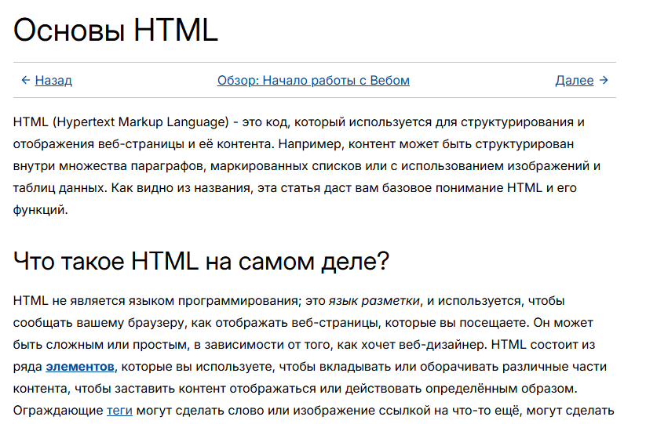
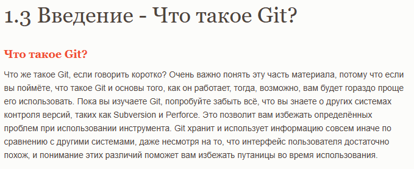
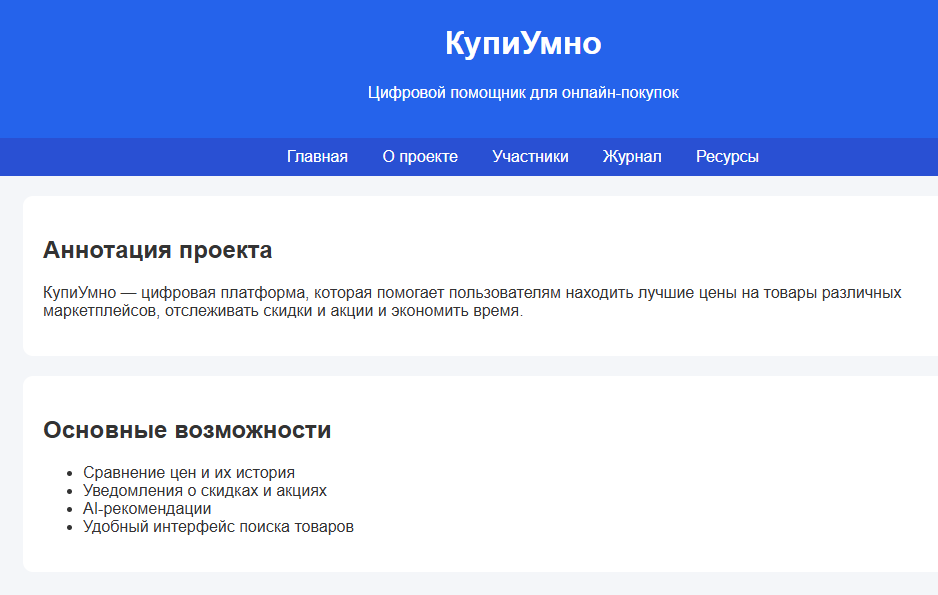
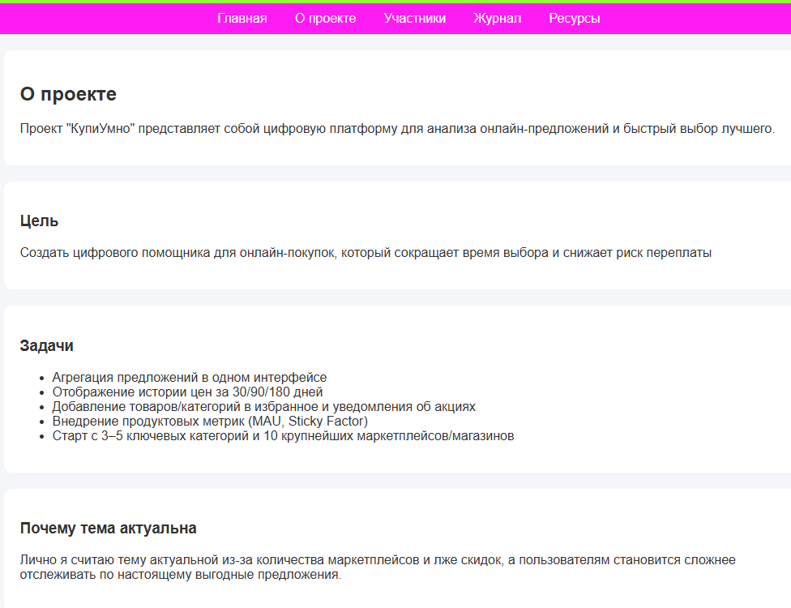
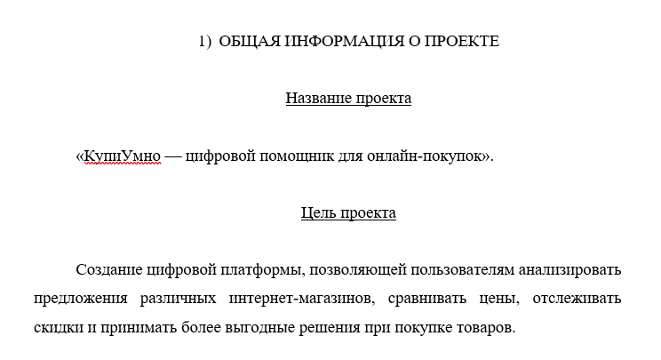

Журнал проекта
День 1 - Изучение требований
Изучены требования практики. Изучены материалы по работе с html, css и GitHub.

Изучение css

Изучение html

Изучение GitHub
День 2 - Разработка прототипа
Разработана на основе примеров (в открытом доступе) структура сайта и созданы основные страницы с кратким заполнением, оформлением и навигацией для первой версии.

Создание прототипа
День 3 - Редактирование страниц
Отредактированы страницы и добавлено больше контента, (пишу заранее)

Редактирование и дополнение страниц
День 4 - Подготовка документации
Заполнил отчет по практике и подготовил GitHub-репозиторий.

Заполнение отчета по практике
День 5 - Завершение проекта
Выполнен окончательный дизайн сайта и подготовлена оставшаяся документация для защиты.